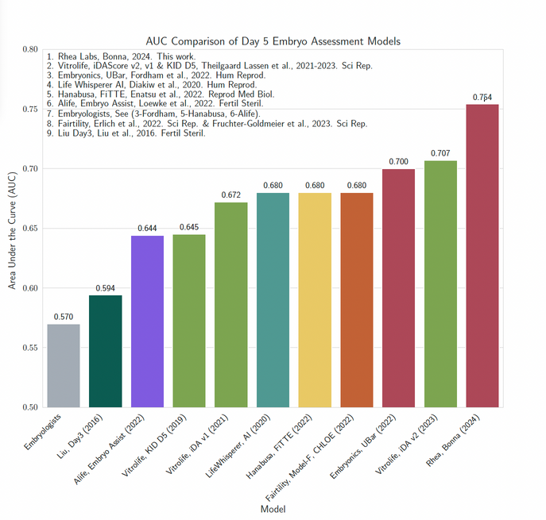
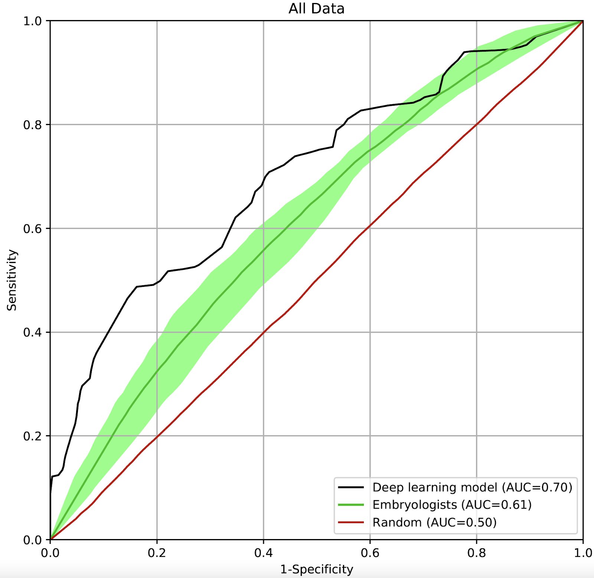

0.754
Bonna AUC
10-fold CV · 1,292 KID embryos · 4 countries
0.707
iDAScore v2
Vitrolife · previous best-in-class
0.700
Ubar (2022)
Rhea Labs predecessor (Hum Reprod)
0.570
Embryologist mean
n = 36 senior embryologists, 13 countries


Four peer-reviewed results, 2020–2024
-
2020 · MIDLUbar v1 — AI Improves Predictive Value for Embryo Selection
AUC 0.82 on 272 embryos (vs 0.58 for a 5-member expert panel). PPV 93% vs 81%.
-
2020 · ESHRE ePOSTERAI vs Expert Panel — Implantation Prediction
Overall accuracy 83.8% vs 73.8% for the expert panel.
-
2022 · HUMAN REPRODUCTIONDNN Ensemble Outperforms 36 Embryologists
AUC 0.70. No individual embryologist beat the model on ROC analysis. 20.5% accuracy improvement over the panel mean.
-
2024 · SPRINGER LNCSBonna — Multi-Center KID Validation
AUC 0.754 on KID data from Israel, Spain, Ukraine, and France. Higher than iDAScore v2 (0.707) and KIDScore on the same benchmark.